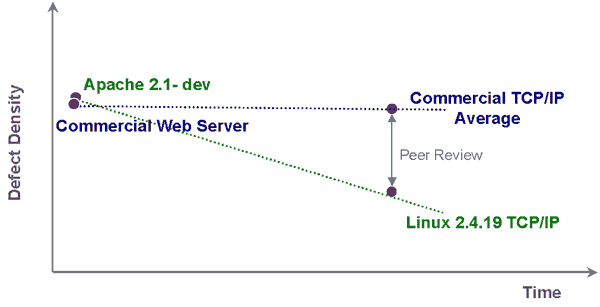

|
|
|
Sponsored Link •
|
Summary
Proponents of Open Source software have long claimed that their code is of higher quality than the equivalent commercial software. Opponents of Open Source argue just the opposite: that Open Source software is inherently unreliable. Until now, there has been little independent, objective data available to support either view.
|
Advertisement
|
On Feb 11, 2003 Reasoning
published a study comparing the Linux TCP/IP stack to commercially developed
TCP/IP stacks. This comparison showed that an active, mature Open Source
project may have fewer defects than similar commercial projects (the study is
available for download at URL http://www.reasoning.com/downloads/opensource.html).
The report generated
numerous requests for more information about Open Source development and how it
compares to commercial development. In response to those inquiries, Reasoning
inspected an Open Source project in an earlier phase of the development
lifecycle. The selection was based on the following criteria, chosen because
they represent the most appropriate comparison with the companys existing
knowledgebase of code inspections:
1.
An active Open Source
community, which shows that there are stakeholders in the development effort
2.
Code in development, which allows us to see the state
of code earlier in the lifecycle
3.
Stable code base (i.e. 2.x or 3.x release), to avoid
the vagaries of a starter project
4.
Usage within the software industry, to ensure that
there is pressure from the customer community
Based on these criteria, the
Apache Web Server was a natural selection. This is the most widely used Open
Source web server available, and is essential to many commercial web based
applications running today. The code that was inspected is included in Apache http
server 2.1, dated January 31, 2003. This specific version represents active
development of approximately two months.
Automated Software Inspection
Software inspection the
process of examining source code to identify defects is a standard practice in
development organizations and is widely recognized as the best way to find
defects. Inspection is hardware-independent, does not require a runable
application or a suite of test cases, and does not affect code size or
execution speed. The majority of code inspections are performed manually.
Theoretically, the greatest number of defects can be uncovered when a developer
reads through the code line by line. However, this process is slow,
painstaking, and fraught with inconsistency and does not scale to handle the
growing number of multimillion-line applications.
As a code base grows, the
cost of a complete manual inspection becomes prohibitive, and the volume of
code is intimidating to developers. As a result, manual inspections are only
performed on subsets of the source code.
Inspection tools are
available, but are capable of performing only a portion of the inspection
process, requiring significant further manual review. These tools generate a
large volume of defect warning messages, but many of them are false positives
the inspection tool thinks that it has found a defect, but a deeper manual
analysis of the context shows that it has not. This false positive problem is
so severe that the rate frequently exceeds 50 false positives for each true
positive. In other words, only two percent of warning messages represent actual
defects.
Automated software
inspection (ASI) services provide many of the benefits of a manual code review
in significantly less time, and at a dramatically lower cost, than manual
inspection or internal use of inspection tools. It is typically conducted as an
outsourced service, which prevents the diversion of in-house development
resources from current development projects.
Automated software
inspection typically identifies defects that cause application crashes and data
corruption, and provides actionable reports for the development team. With the
expertise gained by running and analyzing the output of automated tools on a
daily basis, ASI is able to mitigate the problem of false positives.
The results of automated
code inspection are reports that:
·
Make defect removal
fast and simple by identifying the location and describing the circumstances
under which the defects will occur
·
Identify the parts of
the code with the greatest risk, enabling the development organization to focus
QA and testing resources where they are most needed
·
Compare code quality
with a benchmark
Apache Inspection Results
The inspected Apache code
base consisted of 58,944 lines of source code (not including white spaces or
comment lines). In total, we found 31 code defects. A key reliability indicator
is the defect density, which is defined as the number of defects per thousand
lines of source code. The defect density of the Apache code inspected comes to
0.53 per thousand lines of source code (KLSC). In comparing this defect density
to the commercial applications we have inspected, we find that the Apache code
has a defect density very similar to the average defect density we have found
within commercial applications.
Based on our experience,
Apache 2.1 is starting at a similar defect level as commercial code. This is
not unexpected. Development teams working on Open Source are likely to have the
same experience level as commercial projects. This is particularly true with
projects that are widely used within industry; since they will often include
input from those same commercial developers.
Another component of our
analysis is the breakdown of defects by defect class and insights that can be
drawn from this information. We divide the defects found into five specific
categories:
·
Memory leaks: 0
·
NULL pointer
dereference: 29
·
Bad Deallocations: 0
·
Out of Bounds Array
Access: 0
·
Unintialized Variable: 2
Defects found in the Apache
code are consistent with new development, as seen by the relatively high
percentage of Null Pointer Dereferences. In a different application, we would
expect to see some memory leaks and out of bounds array accesses. However,
given the nature of Apache, these two categories have likely received far more
attention. In particular, software that has not gone through as rigorous a
security cleaning is much more likely to have out of bounds array access
(since buffer overflows are a subset of these). The difference in defect
distribution, though interesting, is just a natural tradeoff based on the
application functionality.
Unlike our findings in the
Linux TCP/IP inspection, Apache 2.1 does not show an appreciable difference in
code quality (as measured by defect density) when compared to commercial
development.
Observation
Given that this code has a
similar defect density as commercial code, what can be learned about the
differences between Open Source and commercial development? From the previous Open Source inspection,
Reasoning determined that the Linux TCP/IP stack showed a lower number of
defects than the majority of the commercial TCP/IP stacks inspected. This was a
comparison of very mature software and, on average, showed Open Source to be
superior. However, it only looked at the result of many years of development.
Because the Apache code is relatively early in its development lifecycle, this
current inspection allows an approximation of the initial defect density
achieved by Open Source. Though more data will be needed to prove out a
conclusion, when the Open Source and commercial data points are plotted, we can
make an approximation of the change in defect density over time.
Given the limited data,
Reasoning sees Open Source as being faster, on average, than commercial efforts
at removing defects from software. This is not as expected, since commercial
software companies often invest considerably in testing tools and time in order
to meet reliability requirements demanded by their customers.

It should be noted that Open Source can end up with fewer
defects. Because the new evidence shows that both development environments are
likely to start with a similar number of defects, the core of the difference
must be after development starts. In that time period, the main difference is
the number of developers actually looking at the code. Commercial software
companies are more likely to have sophisticated tools; however, they are
unlikely to have achieved the same level of peer review that Open Source code
can achieve, which is critical in finding defects.
This is certainly not a new concept. Software engineering
leaders such as Michael Fagan and Capers Jones have pointed out the advantages
of software inspection. The advantage of the inspection process to identify
and remove defects is likely to be heightened in Open Source projects, since
the reviewers are often quite independent from the contributors. This provides
the autonomous nature that Fagans review guidelines are aimed at. While it may
be difficult within a company, it is a natural consequence of Open Source.
It has been clearly demonstrated that incorporating
inspection into the software development process results in significant
reductions in defect rates. Capers Jones data shows a six-fold acceleration in
defect removal when inspection is employed in conjunction with testing.
The greatest challenge for development organizations is that
the amount of effort needed to manually review code and manage the process to
guarantee review independence often leads to abandonment of the effort. Or
worse, inspections become a virtual rubber stamp.
Considerations
As earlier stated, Reasoning has chosen Open Source projects
to best compare against commercial development. Clearly the data presented here
cannot be extrapolated to all Open Source efforts, or to all commercial
efforts. Other Open Source projects may or may not show the same improvement in
defect densities as they mature. Key drivers in this are:
·
The number of active developers reviewing the project
·
Maturity level since the last major release (i.e. later dot
releases)
·
Strong customer use
However, when selecting an Open
Source (or any third party) product, we recommend a thorough analysis of its
reliability.
This comparison relies on the
assumption that the Apache 2.1 project will attain the same defect densities
found in the mature Linux TCP stack. Though this is a reasonable assumption, it
will require future study to verify.
Have an opinion? Be the first to post a comment about this weblog entry.
If you'd like to be notified whenever Rix Groenboom adds a new entry to his weblog, subscribe to his RSS feed.
| Rix Groenboom is European support manager for Reasoning Inc., a company that offers global inspection and migration services. In this capacity, he has been involved in many automated software inspection projects for Fortune 2000 companies. Groenboom holds a MSc and PhD in Computing Science from the University of Groningen (the Netherlands), and has written over 30 publications on the use of formal methods in imbedded and knowledge-based systems development. His special areas of interest are in the use of formal languages for the specification, design and validation of software applications. |
|
Sponsored Links
|